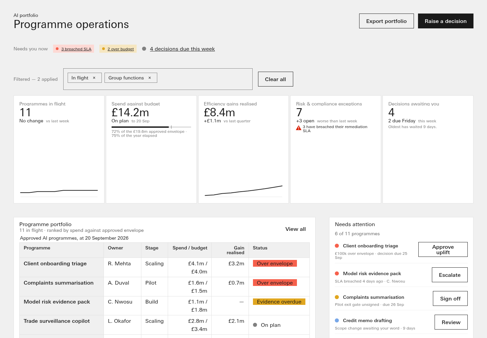
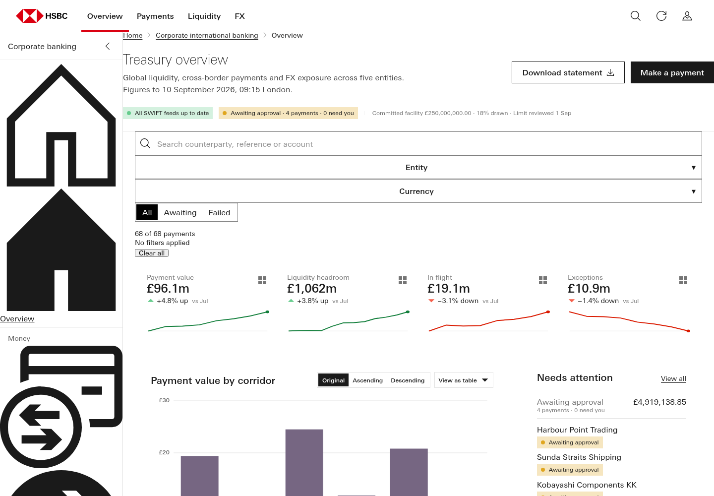
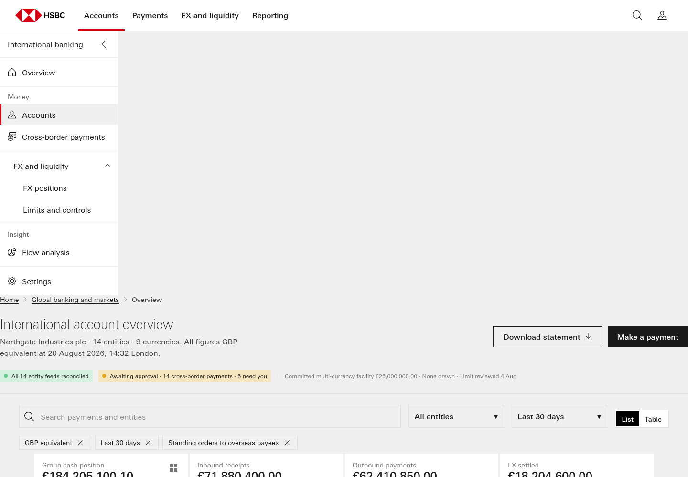
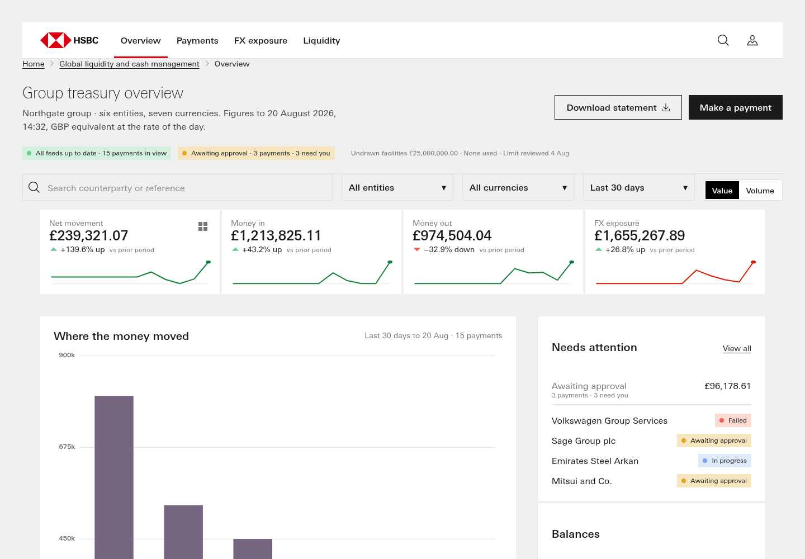
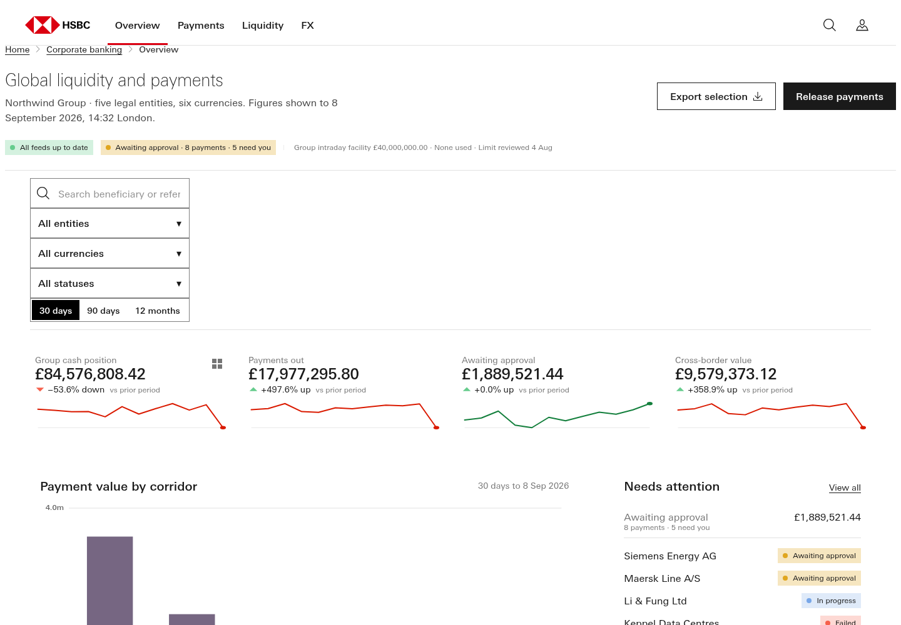
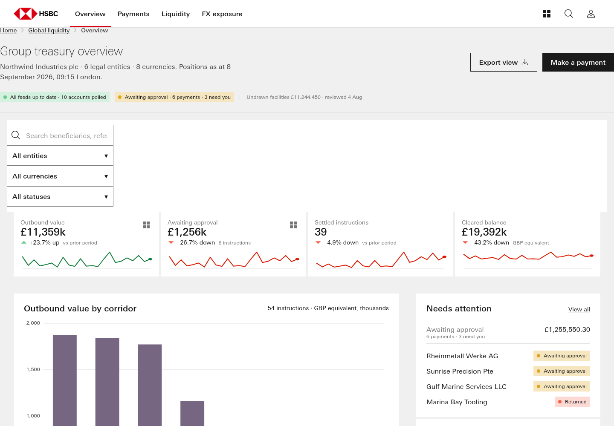

Apollo eval harness r4c-1.0 · #304 R4c
Extra baseline points: pages already in the repo (other prompts, labelled)
8 runs. Every number links back to its scorecard; every scorecard says how to reproduce it.
| #292 D one-shot | #288 P composed probe | #267 cold run 6 | #258 cold run 1 | #258 cold run 2 | #258 cold run 3 | #258 cold run 4 | #258 cold run 5 | |
|---|---|---|---|---|---|---|---|---|
| kind | extra baseline: #292 D cold one-shot (AI-ops definition, repo canon) | extra baseline: #288 P probe, template fenced (AI-ops prompt, repo canon) | extra baseline: #267 cold run 6 (v1.0.10, own canon copy), hand 2/3/3/2 | extra baseline: #258 cold run 1, v1.0.7, hand 3/2/0/2 | extra baseline: #258 cold run 2, v1.0.7, hand 3/2/3/3 | extra baseline: #258 cold run 3, v1.0.7 prompt, hand 3/2/3/2 (renders against today's repo canon) | extra baseline: #258 cold run 4, v1.0.7, hand 3/2/3/3 | extra baseline: #258 cold run 5, v1.0.7, hand 3/3/3/2 |
| profile | generic-dashboard | generic-dashboard | generic-dashboard | generic-dashboard | generic-dashboard | generic-dashboard | generic-dashboard | generic-dashboard |
| pack | Apollo-Spider-v1.0.13.zip | Apollo-Spider-v1.0.13.zip | Apollo-Spider-v1.0.13.zip | Apollo-Spider-v1.0.13.zip | Apollo-Spider-v1.0.13.zip | Apollo-Spider-v1.0.13.zip | Apollo-Spider-v1.0.13.zip | Apollo-Spider-v1.0.13.zip |
| visually rich | 3 | 3 | 2 | 1 | 1 | 1 | 1 | 1 |
| full | 1 | 1 | 3 | 2 | 3 | 3 | 3 | 3 |
| persistent | 0 | 0 | 3 | 0 | 3 | 3 | 3 | 3 |
| interactive | 0 | 0 | 2 | 2 | 2 | 2 | 2 | 2 |
| mechanical total /12 | 4 | 4 | 10 | 5 | 9 | 9 | 9 | 9 |
| geometry score (4b) /3 | 0 | 0 | 0 | 0 | 0 | 0 | 0 | 0 |
| composed or traced | COMPOSED (0.041) | COMPOSED (0.041) | TRACED (0.454) | TRACED (0.52) | TRACED (0.561) | TRACED (0.53) | TRACED (0.526) | TRACED (0.502) |
| theme | n/a (profile asks no theme) | n/a (profile asks no theme) | n/a (profile asks no theme) | n/a (profile asks no theme) | n/a (profile asks no theme) | n/a (profile asks no theme) | n/a (profile asks no theme) | n/a (profile asks no theme) |
| components | 13 | 12 | 9 | 5 | 6 | 6 | 6 | 7 |
| charts rendered | 2 | 2 | 3 | 1 | 1 | 1 | 1 | 1 |
| chart types | 2 | 2 | 3 | 1 | 1 | 1 | 1 | 1 |
| clipped charts | 0 | 0 | 0 | 0 | 0 | 0 | 0 | 0 |
| pack screen gate | PASS | PASS | FAIL | FAIL | FAIL | FAIL | FAIL | PASS |
| dataviz gate blocking | 0 | 0 | 2 | 0 | 0 | 0 | 0 | 0 |
| a11y unnamed controls | 0 | 0 | 0 | 0 | 0 | 0 | 0 | 0 |
| a11y small targets | 3 | 7 | 10 | 6 | 6 | 3 | 7 | 3 |
| geometry (4b) | FINDINGS | FINDINGS | FINDINGS | FINDINGS | FINDINGS | FINDINGS | FINDINGS | FINDINGS |
| own size (4b) | FINDINGS | FINDINGS | FINDINGS | NO-PARTS | NO-PARTS | FINDINGS | FINDINGS | CLEAN |
Light renders








Left to judgment
- Taste: does the page look like Apollo at its best — hierarchy, rhythm, restraint (Dave's eye on the light/dark shots).
- Alignment and spacing that the geometry signals cannot name (optical alignment, crowding, the 'sloppiness class' of #288).
- Whether each chart is the RIGHT chart for its figure (form-to-question fit), not only present and rendered.
- Data believability: realistic entities, currencies, FX and magnitudes for a CEO audience.
- Whether the overview actually answers the three CEO questions, as read by a person, not by keyword.
- Whether each workflow (approve, acknowledge, service request) is plausible end to end, beyond 'the DOM changed'.
- Composed vs traced is MEASURED as similarity; whether the composition is GOOD composition is judgment.